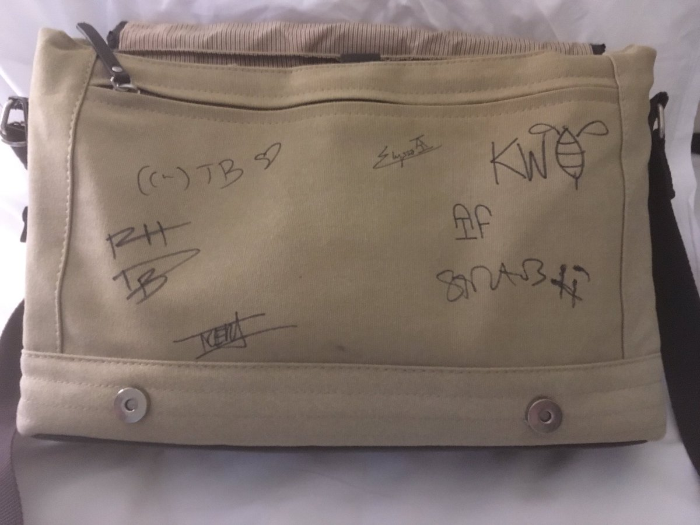

Hello I am feeling much better now. I got hurt by magic and now I’m being healed by magic so it feels weird but I think everything is going to be fine. Nene has been taking care of me and also crying.
24th of Eleint, 1494 DR 10:35 AM
Nene wants me to stay and rest but I feel a lot better and I want to go back to Waterdeep soon. What should I do?
24th of Eleint, 1494 DR 11:00 PM
Good evening, everyone. I took Lena’s “magic slate” away from her. I’m afraid I must insist that she continues to rest until she’s properly healed, whether she likes it or not. Signed, Renee Bellerose.
25th of Eleint, 1494 DR 9:37 PM
Nene and I are going to stay in Elturel another day so we don't miss the Highharvestide feast. Yum!
30th of Eleint, 1494 DR 8:43 PM
Nene and I are just over halfway home now. It's a long journey.
9th of Marpenoth, 1494 DR 10:12 AM
It's raining and we're almost home.
14th of Marpenoth, 1494 DR 12:09 AM
I'm back home in Waterdeep!
14th of Marpenoth, 1494 DR 5:59 PM
I am going to get my things and move to a new room at the Maiden’s Candle. @RogueMostLikely will always be my big sister but now that Nene is here I should have my own room.
14th of Marpenoth, 1494 DR 11:58 PM
I got Nene a job at Fleet Feet. She will work at the office using magic to search for dangerous packages. She starts on the first day next week. The other people who work at the office are nice so I hope Nene likes it.
18th of Marpenoth, 1494 DR 5:13 PM
Whoa @Slewingtons surprised me by getting my delivery bag signed by grandmama @katewelchhhh and all her friends. Wow! But why wasn’t I invited?

26th of Marpenoth, 1494 DR 7:09 AM
Nene came home yesterday with stories about her lunch break being filled with wizards and monsters and treasure and almost dying. I think I should talk to the other couriers and make sure they’re looking after her.
4th of Uktar, 1494 DR 7:57 PM
Nene said she’s better at magic now and she can fix my hair if I want or even make it a different colour. The red stripe reminds me of when we met but it’s also why I got upset back then and ran away. I’m not sure.
Leave it 9.1%
Fix it 0%
Pick a new colour 90.9%
13th of Uktar, 1494 DR 9:38 PM
What kind of new colour should I choose for my hair?
Natural 0%
Artificial 100%
14th of Uktar, 1494 DR 11:55 PM
What colour hair should I ask for?
Purple 100%
Green 0%
Pink 0%
Blue 0%
16th of Uktar, 1494 DR 10:09 PM
Wow people like purple.
17th of Uktar, 1494 DR 9:07 PM